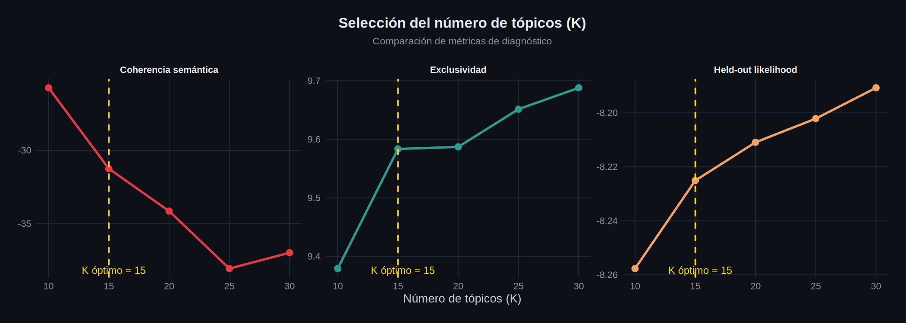
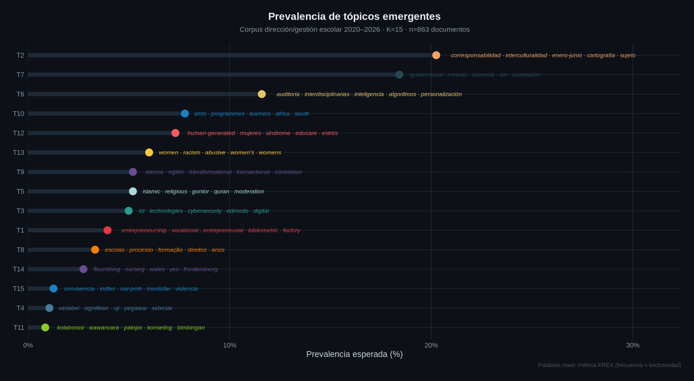
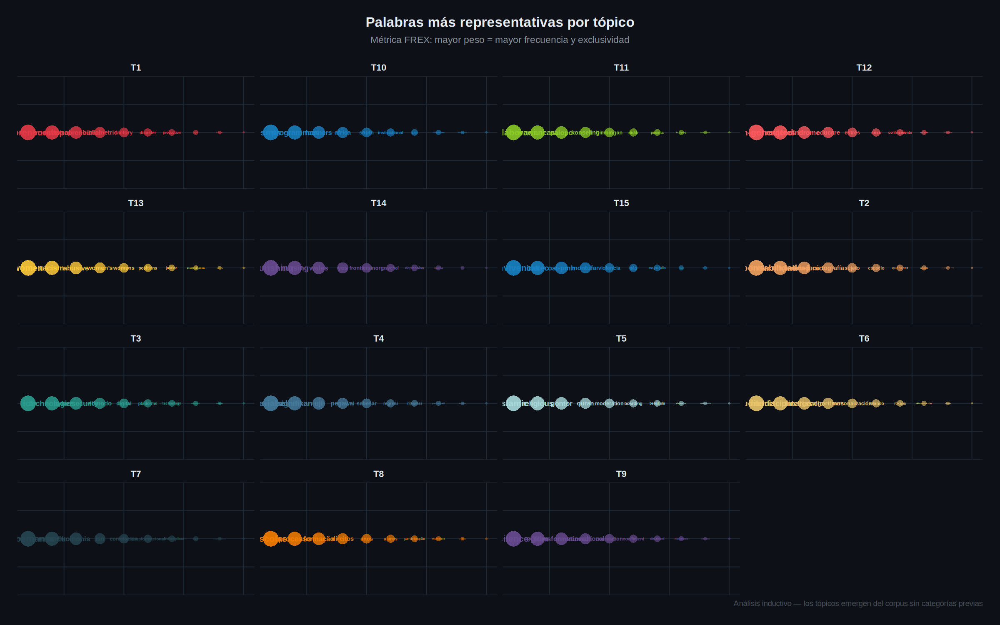
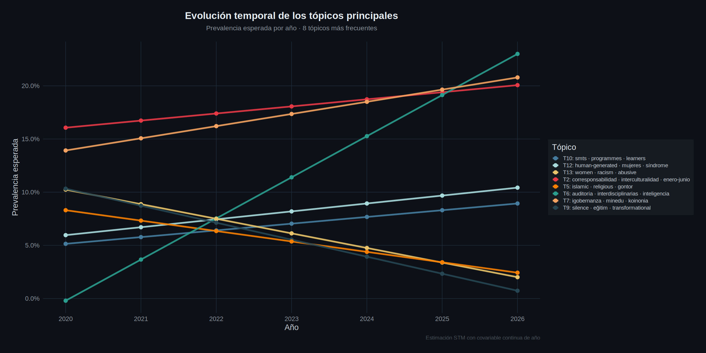

| Tópico | Prevalencia | FREX top 10 | Más frecuentes |
|---|---|---|---|
| T2 | 20.2% | corresponsabilidad, interculturalidad, enero-junio, cartografía, sujeto, espacio, quehacer, amigó, orientaciones, riie | formación, desarrollo, comunidad, social, proceso, procesos, participación, investigación, debe, prácticas |
| T7 | 18.4% | igobernanza, minedu, koinonia, isn, correlación, transformacional, multidisciplinar, ugel, organizacional, hipótesis | calidad, desempeño, instituciones, investigación, institución, nivel, resultados, relación, organizacional, institucional |
| T6 | 11.6% | auditoría, interdisciplinarias, inteligencia, algoritmos, personalización, rolando, roxana, alimentación, abarca, sostenibilidad | desarrollo, datos, innovación, recursos, calidad, desafíos, uso, análisis, ciencias, proceso |
| T10 | 7.8% | smts, programmes, learners, africa, south, instructional, smt, initiatives, emergency, fostering | development, effective, leaders, practices, professional, community, challenges, performance, strategies, instructional |
| T12 | 7.3% | human-generated, mujeres, síndrome, educare, estrés, sexo, confinamiento, rurales, promedio, cierre | investigación, nivel, resultados, análisis, tabla, universidad, padres, factores, años, emocional |
| T13 | 6.0% | women, racism, abusive, women’s, womens, positions, justice, discrimination, identity, dilemmas | women, leaders, social, university, professional, gender, work, justice, higher, positions |
| T5 | 5.2% | islamic, religious, gontor, quran, moderation, boarding, bengkulu, character, child-friendly, naibaho | islamic, boarding, quality, process, implementation, activities, indonesia, jurnal, development, community |
| T9 | 5.2% | silence, eğitim, transformational, transactional, correlation, coefficient, disabled, hypothesis, üniversitesi, self-efficacy | performance, organizational, work, transformational, motivation, effectiveness, significant, quality, relationship, influence |
| T3 | 5.0% | ict, technologies, cybersecurity, edmodo, digital, platforms, technology, evident, analytics, usage | digital, technology, information, system, online, social, covid, ict, development, process |
| T1 | 4.0% | entrepreneurship, vocational, entrepreneurial, bibliometric, factory, disaster, production, tqm, industry, energy | quality, development, vocational, university, skills, curriculum, entrepreneurship, business, high, higher |
| T8 | 3.3% | escolas, processo, formação, direitos, anos, alunos, participação, município, práticas, comunidade | escolas, trabalho, políticas, brasil, processo, educacional, pública, social, pesquisa, democrática |
| T14 | 2.8% | flourishing, nursing, wales, yes, frontiersinorg, psychol, depression, medical, stress, bmc | health, stress, scale, educ, emotional, nursing, factors, medical, leaders, cognitive |
| T15 | 1.3% | convivencia, indtec, oai-pmh, montúfar, violencia, pág, mayo-julio, tut, ricardo, activas | convivencia, pág, ecuador, original, investigación, clima, desarrollo, estrategias, violencia, conflictos |
| T4 | 1.1% | variabel, signifikan, uji, pegawai, sebesar, regresi, integritas, partisipatif, koefisien, disiplin | jurnal, kepemimpinan, kerja, terhadap, organisasi, disiplin, pengaruh, tujuan, motivasi, pesantren |
| T11 | 0.9% | kolaborasi, wawancara, palopo, konseling, bimbingan, didik, peserta, bullying, pencegahan, pelajaran | bullying, kegiatan, peserta, program, didik, proses, anak, memberikan, meningkatkan, mutu |

Coherencia, exclusividad y held-out likelihood

Proporción esperada en el corpus

Términos con mayor frecuencia y exclusividad

Prevalencia por año 2020–2026